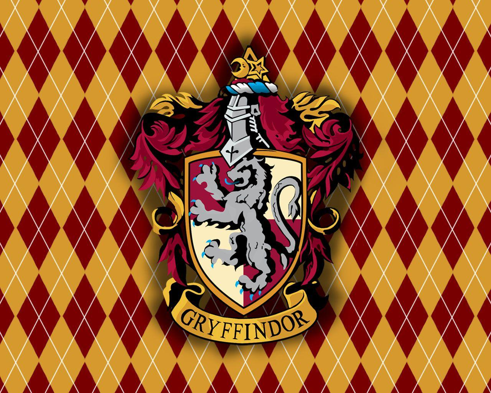

Portal Hogwarts © - 2026.

Grifinória é uma das quatro casas de Hogwarts, sendo conhecida por valorizar coragem, bravura, determinação e cavalheirismo. Fundada por Godrico Gryffindor, é a casa de alunos leais e dispostos a enfrentar desafios para proteger aquilo em que acreditam e as pessoas que amam. Seus alunos frequentemnete vestem as cores da casa: vermelho e dourado, e seu símbolo é um leão, o que representa força e coragem, e foi casa de diversos personagens importantes da história da Grifinória, como Harry Potter, Hermione Granger e Ronald Weasley. A casa é conhecida por formar bruxos determinados, aventureiros e capazes de grandes atos de heroísmo.
Portal Hogwarts © - 2026.